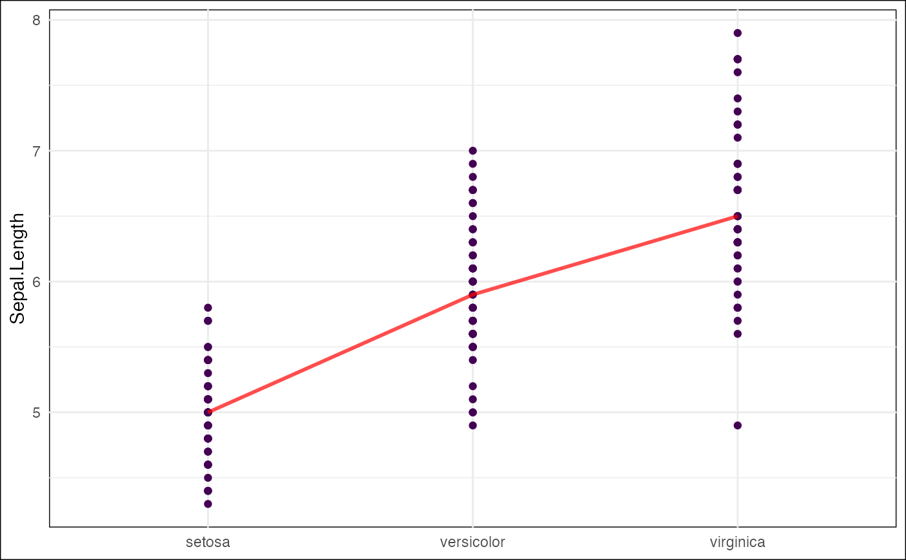
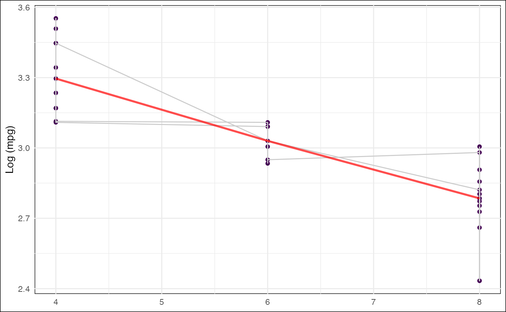
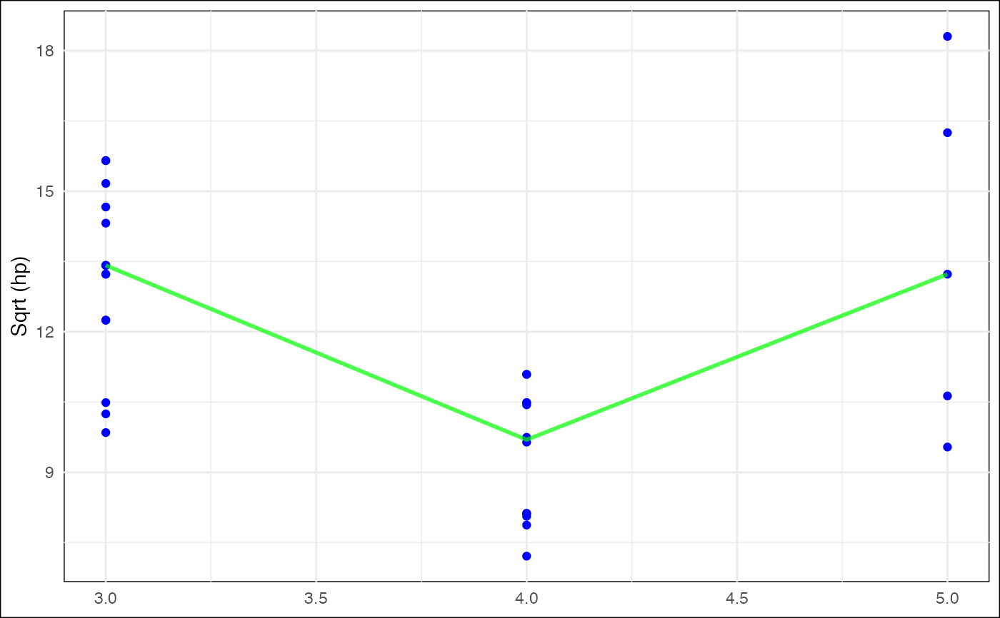

Create a Line Plot with Optional Transformations and Grouping
Source:R/figure_create_line_plot.R
create_line_plot.RdThis function creates a line plot using ggplot2 with options for transforming the y-axis, grouping lines, and saving the plot with a specified resolution. The plot can be saved in both TIFF and PNG formats with automatic filename generation.
Usage
create_line_plot(
data,
x_var,
y_var,
y_transform = "none",
dpi = 100,
output_dir = "output",
file_prefix = "line_plot",
use_geom_line = FALSE,
geom_line_group = NULL,
point_color = "viridis",
line_color = "red",
verbose = TRUE
)Arguments
- data
A dataframe containing the data to be plotted. Must include the variables specified in
x_varandy_var.- x_var
A string representing the column name for the x-axis variable. This should be a categorical or factor variable.
- y_var
A string representing the column name for the y-axis variable. This should be a numeric variable.
- y_transform
A string specifying the transformation for the y-axis: "log" for log transformation (log1p), "sqrt" for square root transformation, or "none" for no transformation. Default is "none".
- dpi
An integer specifying the resolution of the saved plot in dots per inch (DPI). Default is 100.
- output_dir
A string representing the directory where the plot files will be saved. Default is "output".
- file_prefix
A string used as the prefix for the generated plot filenames. The filenames will have a timestamp appended to ensure uniqueness. Default is "line_plot".
- use_geom_line
A boolean indicating whether to include lines connecting points for grouped data. Default is FALSE.
- geom_line_group
A string representing the column name to group the lines by when
use_geom_lineis TRUE. This should be a categorical or factor variable.- point_color
A string specifying the color of the points. Default is "viridis", which uses the viridis color palette.
- line_color
A string specifying the color of the summary line (median). Default is "red".
- verbose
A boolean indicating whether to print messages about the saved plot locations. Default is TRUE.
Examples
# Example 1: Basic line plot with no transformations
create_line_plot(
data = iris,
x_var = "Species",
y_var = "Sepal.Length",
y_transform = "none",
dpi = 100,
output_dir = "output",
file_prefix = "iris_sepal_length"
)
#> Plots saved to: output/iris_sepal_length_20250311_064547.tiff and output/iris_sepal_length_20250311_064547.png

# Example 2: Line plot with log transformation and grouped lines
create_line_plot(
data = mtcars,
x_var = "cyl",
y_var = "mpg",
y_transform = "log",
dpi = 150,
output_dir = "plots",
file_prefix = "mtcars_log_mpg",
use_geom_line = TRUE,
geom_line_group = "gear"
)
#> Plots saved to: plots/mtcars_log_mpg_20250311_064548.tiff and plots/mtcars_log_mpg_20250311_064548.png

# Example 3: Line plot with square root transformation and customized aesthetics
create_line_plot(
data = mtcars,
x_var = "gear",
y_var = "hp",
y_transform = "sqrt",
dpi = 300,
output_dir = "custom_plots",
file_prefix = "mtcars_sqrt_hp",
point_color = "blue",
line_color = "green",
verbose = TRUE
)
#> Plots saved to: custom_plots/mtcars_sqrt_hp_20250311_064548.tiff and custom_plots/mtcars_sqrt_hp_20250311_064548.png
